Recap
- We learned the principle of effective stresses.
- We learned how to calculate hydrostatic pore pressures.
- We learned how to calculate vertical in-situ total and effective stresses.
- We learned how to calculate horizontal in-situ total and effective stresses.
Contents
- Total head Hydraulic gradient.
- Darcy's law.
- Hydraulic conductivity and permeability of soils.
- Flow in series and parallel.
Objectives covered in this lecture
- [O2]: Develop an understanding of the importance of groundwater and seepage and its role in evaluating effective stress in soils
After this lecture we will able to:
- Calculate total head and hydraulic gradients.
- Calculate seepage flows for 1D problems.
- Calculate the permeability of uniform and composite soils.
Hydraulics review
Flow in an pipe
\( \begin{align} q=v A \end{align} \)\(q=\) rate of fluid volume flow [L\(^3\)/T]
Flow Through soils
\( \begin{align} q= v_s A_V \end{align} \)\(v_s=\) seepage velocity [L/T]
True seepage velocity

Using the principle of mass conservation:
\( \begin{align} \rho_w v A & = \rho_w v_s A_v \\ v & = \cfrac{A_v L}{A L} v_s \\ v &= \cfrac{V_v}{V_t} v_s \end{align} \)
\(v=\) Darcy velocity [L/T]
\(v_s=\) Seepage velocity [L/T]
\( \begin{align} \rho_w v A & = \rho_w v_s A_v \\ v & = \cfrac{A_v L}{A L} v_s \\ v &= \cfrac{V_v}{V_t} v_s \end{align} \)
\( \begin{align}
v= n v_s
\end{align} \)
\(v=\) Darcy velocity [L/T]
\(v_s=\) Seepage velocity [L/T]
Total head
Bernoulli's equation describes the of an incompressible flow in terms of its potential, kinetic, and pressure energy.
\(E= \underbrace{z \rho g}_{\textcolor{green}{\text{Potential e.}}}
+ \underbrace{\rho \cfrac{v^2}{2g}}_{\textcolor{red}{\text{Kinetic e.}}}
+ \underbrace{P}_{\textcolor{blue}{\text{Pressure e.}}}\)
- \(z=\) Elevation from datum
- \(v=\) velocity
- \(P=\) pressure
\(h\): Is the total energy per unit weight of water.
\(
h= \cfrac{E}{\gamma_w} = z+\textcolor{blue} {\underbrace{ \cfrac{u}{\gamma_w}}_{\substack{h_w=\text{Pressure}\\ \text{head}}}}
= z + \textcolor{blue}{h_w}\)
Example 5.1
For the points in the figure below determine the total head, the pressure head, and the location of the piezometric line.
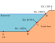
Water in movement
Water flows if and only if there is a (i.e., in total head \(\Delta h \neq 0 \) ). If the flow moves from point A to B, then \(h_a>h_b\)
Participation question 5.1
Base on the figure below: what option is accurate regarding the water movement?
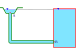
- Water moves from B to A
- Water moves from A to B
- The water doesn't move
Hydraulic gradient
\(i\): Is the gradient of total head, or change of (\(\Delta h\)) over the of flow path ( \(L\)).
\(i=\cfrac{\Delta h}{L}=\cfrac{h_a-h_b}{L_{ab}} \)
Although the hydraulic gradient could be negative we usually calculate it using \(h_a>h_b\)
- \(i=0\) \(\longrightarrow\)
- \(i \neq 0\) \(\longrightarrow\)
Example 5.2
Calculate the hydraulic gradient between points A and B in the figure bellow and plot the piezometric line between points C and D.
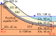
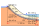
Darcy experiments
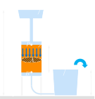
- Background: Henry Darcy managed the water supply for Dijon, France (1830s and 1840s)
- Goal: Understand how water flows through sand filters used for water treatment
- Experiment: Measured water flow and pressure change.
- Control variables: Kept the sand column's area (\(A\)) and length (\(L\)) constant.
Participation question 5.2
What do you think is the influence of \(\Delta H= H_1 - H_2\) on \(q\)?
- \(q\) is independent of \(\Delta h\)
- \(q\) is directly proportional to \(\Delta h\)
- \(q\) is inversely proportional to \(\Delta h\)
Note that \(\Delta h\) is from point 1 to 2.
We can associate energy loss in with heat loss in a pipe assuming the velocity in on the
\( \begin{align}
\Delta h = - h_f &= - \cfrac{32 L v^2}{R_e d_m g} \\
R_e & = \cfrac{\rho v d_m}{\mu}
\end{align} \)
\( \begin{align} \Delta h = - \cfrac{32 \mu L q}{\gamma d_m^2 A} \end{align} \)
\( \begin{align} \Delta h = - \cfrac{32 \mu L q}{\gamma d_m^2 A} \end{align} \)
\( \begin{align}
q = - \left(\cfrac{C \gamma}{\mu} \ d_m^2 \right) \times \cfrac{\Delta h}{L} \times A
\end{align} \)
Thus:
\(k\) is termed the
Thus:
\( \begin{align}
q= -k i A
\end{align} \)
\(k\) is termed the
This is the so-called Darcy's law
\(k\) [L/T]: Is a property of the soil related to how fast through the soil matrix.
Examining the the equation for \(k\) we can conclude that:
\( k= C \color{blue} \underbrace{\cfrac{\gamma}{\mu}}_{\substack{\text{Fluid}\\\text{properties}}} \ \color{red} \underbrace{d_m^2}_{\substack{\text{porous}\\\text{media}\\\text{properties}}} \)
Soil permeability depends on two main factors:
- Properties of the
- Properties of the porous media (soil)
Note: Soil permeability varies based on media
| Soil type | Permeability \(k\) [cm/s] |
| Gravel | \(> 10^{-1}\) |
| Clean sands | \(10^{-3}\) to \(10^{-1}\) |
| Dirty gravels and sands | \(10^{-5}\) to \(10^{-3}\) |
| Silt | \(10^{-7}\) to \(10^{-5}\) |
| Clay | \(< 10^{-7}\) |
Context: \(10^{-7}\) cm/s is about 1.25 in/year
- Fine-grained materials have lower \(k\) because they have smaller pores
- As water moves it dissipates mechanical energy due to its viscosity. Since fine-grained soils like clay have larger \(SSA\), the energy dissipated by viscous drag is orders of magnitude larger than for coarse-grained materials
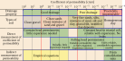
Constant head permeability test
With \(\Delta h=\)cnt. the permeability is calculated measuring the total volume of water collected (\(Q\)) in a time period (\(\Delta t\))
\(k=\cfrac{QL}{A \Delta h \Delta t}\)
- Better for coarse soils.
- Shorter testing times.
- Samples with large cross-sectional areas.
Falling head permeability test
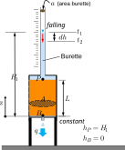
Permeability is calculated measuring the head fall \(\Delta H\) in time \(\Delta t\). The head is not constant.
\(k=\cfrac{a}{A}\cfrac{L}{\Delta t} \ln \left(\cfrac{H_1}{H_1-\Delta H}\right)\)
- Better suited for low permeability soils
- Longer testing times
- Soil samples with smaller cross-sectional areas.
Empirical correlations
- Shepard (1989) formula:
\(k[cm/s]=C d_{50}^j\)
- \(d_{50}\) in mm
- \(C=\) empirical coefficient between 0.4-10.0. 1 is a good value for clean poorly graded sands.
- \(j=\) empirical exponent between 1.5-2.5
- Kozeny-Carman's from Bear (1972) formula
\(k[m/s]= \left( \cfrac{\rho g}{\mu} \right) \cfrac{n^3}{(1-n)^2} \cfrac{d_{50}^2}{180}\)
- \(d_{50}\) in m
Notes on empirical equations:
- Recall that hydraulic conductivity varies widely, therefore, you can expect high uncertainty associated with these equations
- Use with caution and validate against field data when possible
- Tend to work better for clean coarse-grained soils
Example 5.3
A cylindrical soil sample, 7.6 cm in diameter and 17.8 cm long, is tested in a constant-head permeability apparatus. A constant head of 85 cm is maintained during the test. After 2 min of testing, a total of 1054 g of water was collected. The temperature was 20oC. Calculate the permeability of the soil sample.
Example 5.4
A laboratory falling-head permeability test is performed on a light-gray gravelly sand (SW), and the following data is obtained:
Calculate the permeability of the soil sample in cm/s.
- \(a=7.25\) cm2
- \(A=11.43\) cm2
- \(L=11.62\) cm
- \(H_1=171.4\) cm
- \(H_2=79.3\) cm
- \(\Delta t=110\) sec for the head to fall from \(H_1\) to \(H_2\)
Recall that Darcy velocity (\(v\)) is the velocity of water if it could flow trough all the area \(A\) of the cross section
The \(v_s\) is the velocity needed for travel time calculations
\( v_s = \cfrac{v}{n_e} = \cfrac{q}{A n_e} \)
\(n_e=\) is the effective porosity. \(n_e \leq n\) because some pores may be isolated and not contribute to flow.
Example 5.5
The water levels in the two wells 20 m apart are 18.4 m and 17.1 m. The time of breakthrough at well B using a tracer introduced at A is 167 hours. Calculate (a) the horizontal hydraulic gradient, (b) the average linear velocity, and (c) the hydraulic conductivity
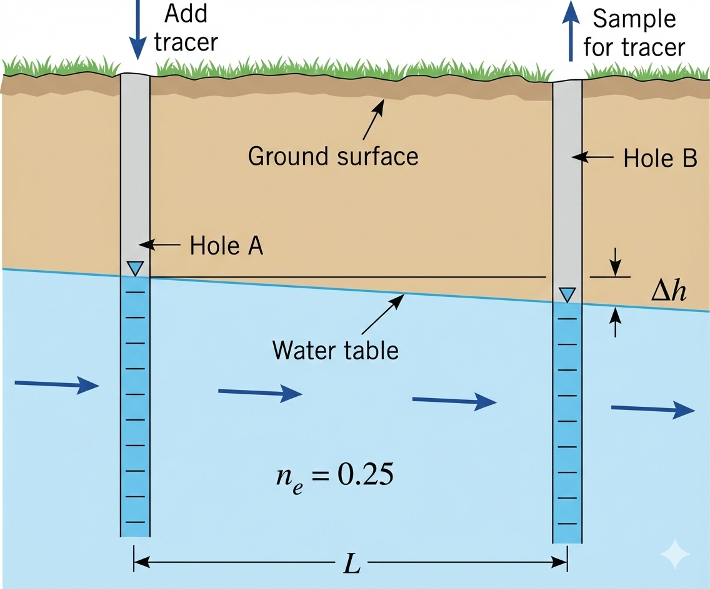
Example 5.6
The figure shows water flow through the soil specimen in a cylinder. The specimen's \(k\) is \(3.4 \times 10^{-4}\) cm/s.
- Calculate total head, pressure head, and pore pressure at point A and B.
- Draw the levels of water in standpipes.
- Compute the amount of water flow \(q\) through the specimen.
Example 5.7
The test setup has the dimensions shown below. Calculate: (a) the pressure head, (b) elevation head, (c) total head, and (d) head loss at points B, C, D, and F in cm of water.
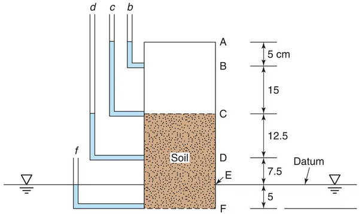
Anisotropy/Heterogeneity
The distribution of hydraulic conductivity within an aquifer (\(k(x, y, z)\)) is .
we classify this variability in two categories:
- Homogeneous: Permeability is a constant WRT space.
- Heterogeneous: Permeability with position in space.
In practice, every aquifer is heterogeneous. We use statistical measure such as the but knowing the ranges is usefull
Directional variability
An ideal media would have well packed spherical particles, but in reality, grains can be irregular.
We use two temrs to define this property:
- Isotropic: Permeability is in all directions.
- Anisotropic: Permeability is on direction
Note: \(k_x > k_y\) due to natural sedimentation processes and gravitational action
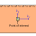
How does \(k\) varies directionoally and spatially in a soil?
Equivalent permeability
If the soil is conformed of layers with different permeability, we need to calculate an equivalent permeability in order to apply Darcy's law.
We will study two cases:
- Flow is perpendicular to the layering.
- Flow is parallel to the layering.
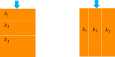
Case I: Flow perpendicular to layers
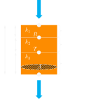
\( \begin{align}
q &=q_1=q_2=q_3 \\
q &= k_{eq} \frac{\Delta h}{L} A \\
&= k_{eq} \frac{\Delta h_1 + \Delta h_2 + \Delta h_3}{L} A\\
q &= k_{eq} \frac{\frac{q L_1}{k_1 A} + \frac{q L_2}{k_2 A} + \frac{q L_3}{k_3 A}}{L} A\\
\end{align} \)
\( k_{eq}=\cfrac{L}{\sum_{i=1}^n L_i/k_i} \)
Example 5.8
A constant head permeability test was conducted on a chamber of 6 inches of diameter by 12 inches heigh. The soil was placed between two porous stones of 1/2 inches of diameter with a permeability of \(k=1 \times 10^{-3}\) cm/s each. The test lasted 1.5 hr and 2 lt. of water were collected. The total head difference was 1 m. Find the permeability of the sand considering the effect of the porous stones.
Case II: Flow parallel to layers
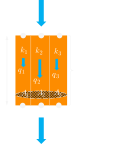
\( \begin{align}
q & = q_1 + q_2 + q_3 \\
k_{eq} \frac{\Delta h}{L} A & = k_1 \frac{\Delta h}{L} A_1 + \\
&k_2 \frac{\Delta h}{L} A_2 + k_3 \frac{\Delta h}{L} A_3 \\
k_{eq} A &= k_1 A_1 + k_2 A_2 \\
& + k_3 A_3
\end{align} \)
\(k_{eq}=\cfrac{\sum_{i=1}^n k_i A_i}{A}\)
Example 5.9
A permeable water channel will be constructed as shown in the figure. Three layers of sand with \(k_1=1.5 \times 10^{-5}\) cm/s, \(k_2=7.89 \times 10^{-3}\) cm/s, and \(k_3=1.2 \times 10^{-4}\) cm/s connects a river and the proposed channel as illustrated. Calculate the hydraulic gradient between the river and the channel, the equivalent permeability of the layers, and the flow per unit of length.
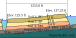
Example 5.10
Consider an aquifer with three horizontal layers as listed in the table. The head at the top of the top layer is 101.3 m and the head at the bottom of the bottom layer is 96.2 m.
- Sketch the system
- Calculate the equivalent horizontal and vertical hydraulic conductivities for the composite aquifer
- Calculate the vertical component of the flow rate
- Use Darcy's law to calculate the total head a the top, middle, and bottom of each individual layer
| Thickness (m) | \(k_x\)(m/d) | \(k_y\)(m/d) | |
|---|---|---|---|
| Layer 1 | 1.5 | 6 | 0.1 |
| Layer 2 | 3.9 | 0.5 | 0.02 |
| Layer 3 | 2.75 | 2.5 | 0.05 |